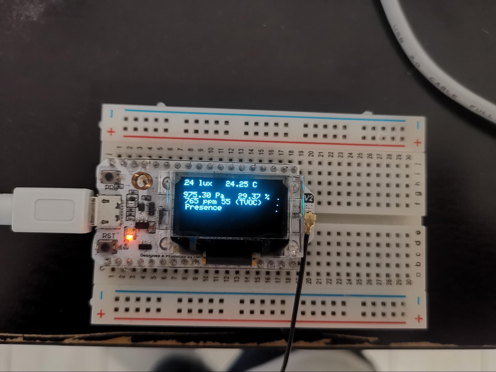

Dans un premier temps, avant même de commencer à brancher le moindre fil, nous avons réalisé et organisé des recherches sur les différents capteurs à notre disposition afin de s’assurer qu’ils fournissent bien les données voulues et afin de récolter des informations sur eux, sur comment les brancher ou les utiliser.
Cette recherche n’aura pas toujours été des plus faciles, certains capteurs étant assez méconnus, mais nous avons réussi à établir un tableau (voir partie Technologies retenues) assez complet pour chacun d’entre eux.
Dans un second temps, après que toutes nos recherches soient complètes, nous nous sommes attaqués à la partie principale de ce projet.
L’attendu de ce projet était la mise en place d’un groupe de capteurs récoltant de manière autonome et de façon régulière des données d’ambiance sur une salle (température, humidité, taux de CO2…) qui seront transmise à un autre dispositif chargé de les traiter et de les afficher de façon claire pour un humain. Une application avait été envisagée initialement mais en l'absence de demande expresse du client, elle n’a pas été développée
Globalement, le projet est complété. Améliorable, ce que nous traiterons dans une partie à suivre, mais fonctionnel. Ce dernier consiste en plusieurs blocs :
Le deuxième bloc est le bloc dit de réception, constitué d’un unique ESP32 :
Enfin, le troisième bloc n’est pas physique, il s’agit de ThingSpeak ou, plus précisément, d’un canal ThingSpeak, dans lequel toutes les données collectées y sont stockées.
Ces trois blocs fonctionnent majoritairement ensemble et composent le projet en lui-même. Le bloc de collecte est indépendant des autres, dans le sens où ce dernier collectera et enverra des données de façon régulière sans s'inquiéter de l’état des 2 autres tandis que les blocs de réception et de stockage, eux, ont besoin du premier bloc pour fonctionner correctement et l’un ne peut fonctionner sans l’autre. En effet, dû au fait que les deux blocs s’exécutent en même temps sur un seul ESP, l’ESP attendra que les deux blocs aient fini leurs processus pour se relancer et récupérer de nouvelles données.
Rentrons un peu dans les détails, désormais. Le bloc de collecte fonctionne autour d’une boucle ; Une fois le setup passé, qui consiste tout simplement en l’allumage de tous les capteurs, sans autre action particulière (les capteurs sont initialisés et lancés, l’écran est allumé, le mode veille est paramétré), c’est le moment pour la boucle de se démarrer. Cette boucle consiste en 3 blocs : le bloc du capteur de son, le bloc du capteur de mouvement et le bloc des autres capteurs. La raison de cette séparation vient du nombre de mesures nécessaires pour chaque capteur. Le capteur de son, afin de fournir une valeur, doit réaliser plusieurs mesures à intervalle régulier, ce qui fait qu’il est impossible de le faire fonctionner en même temps que celui capturant les mouvements, ce dernier nécessitant plusieurs mesures mais en bien moins grande quantité.
Enfin, les capteurs restants, comme le capteur de température ou de pression, n’ont besoin que d’une seule mesure, c’est donc pourquoi ils sont intégrés au bloc du capteur de CO2, qui lui nécessite un temps de chauffe pour fournir une seule mesure et, en plus de ça, nécessite des valeurs de température et d’humidité.
La boucle va donc tout simplement démarrer un timer et passer dans tous les blocs à répétition jusqu’à ce que toutes les mesures d’ambiance aient été récoltées. A partir de ce moment-là, la boucle s’arrête car l’ESP va envoyer ses données au deuxième ESP et se mettre en veille, mettant terme au fonctionnement du premier bloc et démarrant le fonctionnement des deux autres. Le message envoyé ressemble à ceci :
lux:temp:pression:temp:humidité:CO2:TVOC:présence:présence
Où chaque paramètre est une valeur décimale, sauf pour la présence, qui renvoie un booléen.
Les données ne sont pas transmises par le biais d’un câble ou par WiFi car cela nuirait à l’objectif de notre projet qui est de pouvoir récolter les informations d’ambiance de plusieurs salles sans pour autant être dans ou proche de ladite salle. C’est pourquoi nous utilisons la technologie LoRaWAN, un protocole de communication radio sur de longues distances entre deux appareils. Grâce à cette technologie, il nous est possible très facilement d’envoyer des données à un autre appareil simplement en connaissant la bande passante utilisée par LoRa dans le continent. Dans le cas de l’Europe, il s’agit de 866E6. La portée de cet échange est très grande, permettant dans des conditions idéales, de se connecter à un appareil situé à plusieurs dizaines de kilomètres, très pratique dans notre cas, car nous voulons pouvoir être capable de recevoir des données d’un capteur situé à l’autre bout de la ville.
Pour conclure sur ce bloc, ce dernier renvoie des données, par le biais de Serial.print à des fins de débug. Ces données comprennent les capteurs ainsi que leur version (pour s’assurer que tout fonctionne) ainsi que les résultats des mesures :
On remarquera que l’on voit beaucoup de fois le capteur de son, ce qui est normal puisqu’il mesure très souvent. Une fois toutes les données affichées, lorsque l’ESP les envoie, il affiche une dernière fois les données compilées avant de rentrer en sommeil.
Une fois les données envoyées, c’est au tour du deuxième bloc de jouer :
Ce dernier va, dans un premier temps, qu’il y ait ou non une transmission, initialiser un certain nombre de choses. Tout d’abord, il va initialiser, comme sa paire, la bonne bande passante LoRaWAN, puis préparer la connexion WiFi et ThingSpeak ainsi l’écran OLED, pour qu’il soit disponible à tout moment pour afficher les données reçues. Une fois fait, il entre dans une boucle infinie dans laquelle il va rechercher des transmissions LoRa. Ce fonctionnement n’est pas économe en énergie, c’est pourquoi il n’est pas possible, pour cet ESP, d’être sur batterie, il devra fonctionner constamment sur secteur.
Une fois la transmission reçue, l’ESP va décomposer le message vu précédemment en autant de variables qu’il y a de données. Pour ce faire, il utilise une simple fonction qui sépare une chaîne en fonction d’un diviseur, dans notre cas “:”.
Une fois les données stockées, le programme est séparé en deux, nos deux blocs restants. Le plus rapide à s’exécuter est le bloc d’affichage ; ce dernier va reprendre les variables stockées précédemment et les afficher, avec quelques modifications pour les rendre facilement compréhensible pour un humain, sur un écran OLED intégré. Ce dernier nous a d’ailleurs causé de nombreux problèmes, qui seront détaillés plus bas. Une fois les données affichées, comme on peut le voir ci-dessous, la tâche et par conséquent le rôle du bloc d’affichage est terminé.
Comme pour le bloc précédent, on retrouve des messages pour le débug dans le moniteur série. Ces derniers sont beaucoup moins nombreux mais permettent de s’assurer que les données reçues sont correctes et que ThingSpeak a bien reçu les données :

Nous arrivons désormais au dernier bloc, le bloc de stockage, chargé de mettre en ligne les données sur le site gratuit ThingSpeak afin d’y avoir accès plus tard ou pour mettre en évidence les variations de données (comme la température, par exemple).
Il s’agit du bloc le plus simple, dans son fonctionnement, parmis les 3 :
Dans un premier temps, le bloc va se connecter au WiFi, défini au préalable au début du code, puis va assigner à chacune des valeurs un champ de ThingSpeak (les champs étant simplement des graphiques affichant les différentes données à un temps donné) avant de les envoyer sur le canal défini lui aussi au préalable à l’aide d’identifiants de connexion, notamment une clé d’API. Une fois cet envoi effectué, la tâche est terminée.
Si l’on se rend sur ThingSpeak, dans le canal adapté, on peut effectivement y voir les données récoltées :
Comme expliqué, chaque graphique correspond à une donnée (lisible sur le côté gauche du graphique). On remarquera que certaines données ne changent pas ou très peu, comme la pression ou le CO2, mais c’est normal. Les graphiques affichent des données très rapprochées pour éviter de les rendre illisibles, mais il est possible de paramétrer en profondeur l’affichage afin d’afficher les données sur plusieurs jours en même temps.
Cela ne s’arrête cependant pas là, puisque l’ESP va vérifier que les tâches sont terminées (en utilisant simplement deux booléens qui passent à True juste avant que la tâche ne se supprime) et le cas échéant, va se bloquer pendant une trentaine de secondes pour que l’on puisse lire les données à l’écran avant de redémarrer et de recommencer, créant effectivement une boucle.
Dans tous les projets, il y a forcément des parties qui ont causé problème, des erreurs à résoudre, des choses à modifier car elles ne fonctionnent pas comme prévu, etc. Et notre projet n’est pas différent de ce point de vue là.
En effet, nous avons rencontré, durant notre travail, un certains nombre de problèmes, principalement au niveau des librairies et surtout des librairies concernant le fonctionnement de l’écran OLED intégré aux microcontrôleurs ESP32
Les librairies nécessaires au fonctionnement des différents composants du capteur n’étaient pas forcément toutes à jour, rendant leur compatibilité avec le reste des composants difficile. En général, les librairies étaient très fournies en exemples près à l’emploi, cependant tous les capteurs n’en possédaient pas, il a alors fallu rechercher sur Internet, chose parfois complexe, au vu du fait que certains capteurs ne sont que peu utilisés et n’ont donc pas beaucoup de documentation.
Concernant l’affichage des données, la librairie officielle d’Heltec, les créateurs de cet ESP et de l’écran OLED intégré, avait été choisie, du fait d’être théoriquement entièrement compatible avec l’ESP. Il a, en revanche, été remarqué que cette librairie fonctionnait très mal avec le reste du programme, causant des problèmes d’affichage conséquents sur l’écran voire son arrêt total, nous en avons donc changé.
Les problèmes ne s’arrêtent cependant pas là, en effet, l’écran a été très complexe à faire fonctionner correctement. Que ce soit au niveau de l’affichage des données ou du rafraîchissement de l’écran, il a fallu beaucoup de temps et de tentatives pour obtenir un rendu correct et facile à lire. Le plus gros du problème réside dans le fait que l’écran a beaucoup de difficultés à afficher correctement et entièrement le texte donné. Il nous a été alors obligé de contourner le problème et d’utiliser des méthodes assez peu conventionnelles pour que le programme fonctionne. Un exemple serait qu’il nous a fallu espacer chaque écriture sur l’écran d’un appel vide, sans quoi la moitié du texte ne s'affiche pas.
Autrement, les capteurs fonctionnent étonnamment bien ensemble. C’était, en effet, notre principale crainte concernant ce projet. Nous pensions avoir beaucoup de mal à faire cohabiter les capteurs, puisque chacun d'entre eux utilise une librairie différente et nécessite des étapes d’allumage différentes elles aussi. L’exemple le plus évident reste le capteur de CO2. Ce dernier nécessite un temps de “chauffe” d’une dizaine de secondes avant de commencer à fournir des données. Ce temps de latence a posé problème puisqu’il a fallu axer tout le code de récolte de données autour de ce capteur : nous avons dû forcer le programme à attendre qu’une valeur du capteur soit transmise avant de procéder à l’envoi des données, résultant en une attente d’environ 15 secondes entre l’allumage de l’ESP et l’envoi effectif des données au receveur.
Un autre problème, plus mineur, vient des câbles, très nombreux au vu du fait qu’un grand nombre de capteurs soient branchés, qui viennent s’entremêler les uns aux autres et se débranchent très facilement si on les bouge trop, causant à moultes reprises des erreurs dues aux capteurs débranchés.
Bien que nous ayons eu une quantité suffisante de temps, il y a toujours des améliorations que nous aurions voulu implémenter mais pour lesquelles nous avons manqué de connaissances ou que nous avons simplement mis de côté pour nous concentrer sur l’essentiel.
Parmi ces ajouts, on retrouve l’implémentation d’un réveil de l’ESP en cas de mouvement ou de bruit détecté en plus du réveil habituel au bout de 30 secondes. Cela nous aurait demandé trop de temps et nous ne pensions pas être capable de le réaliser, cela a donc été mis de côté, mais permettrait de capturer avec plus de précision les données. Cependant, il faudrait changer le matériel, les capteurs de son et de mouvement étant de piètre qualité et ne fournissant pas des mesures digne de ce nom.
Également, bien que ce ne fasse pas vraiment partie des qualifications d’un développeur, il serait intéressant de créer une boîte pour l’ESP et ses capteurs qui permettrait de cacher les fils et rendre l’objet plus esthétique en plus de sécuriser les fils qui ne pourront plus se détacher.
Un ajout important au projet, qui avait été envisagé au début, serait la mise en place d’une application mobile permettant l’affichage de chaque bloc de capteurs et leurs mesures afin de centraliser les données. Ce rôle est déjà majoritairement rempli par ThingSpeak, mais ce serait l’occasion de pousser l’idée encore plus loin en y ajoutant la possibilité de modifier certains paramètres ou de contrôler les ESP à distance.
Réaliser ce projet, de la définition des objectifs à la réalisation, nous aura certainement apporté un certain nombres de compétences, parmis lesquelles on peut retrouver des compétences de rédaction pour tout ce qui concerne l’écriture du cahier des charges, de réflexion pour trouver la meilleure solution, ou plus simplement des compétences liées au développement en lui-même, que ce soit en Arduino, pour le code ou en matière de montage électrique, qui a bien été exploité au vu du grand nombre de capteurs qu’il a fallu rechercher et monter.